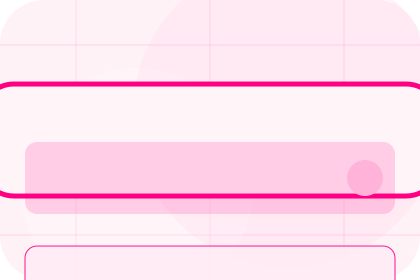
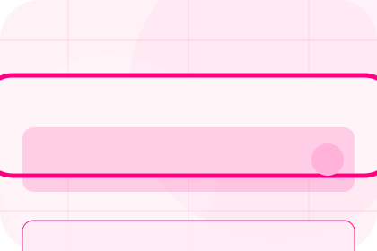
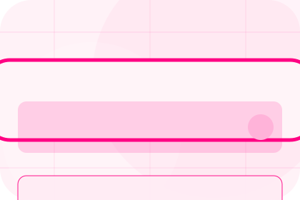
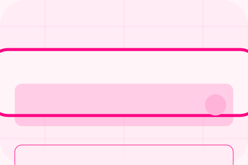

Broker
Open the broker route for independence, partners, standards so insurance, protection & risk cover visitors can compare context, proof, and next steps.
Open BrokerHome / 01
Home opens as a clear insurance decision hub: what Shield offers, who it helps, why it matters, and which route to take first.
The first screen combines positioning, proof, primary action, and fast internal navigation, so people can act immediately or compare the rest of the home route with context.
Friendly quote hero
Select the closest route and Shield keeps the next step, proof, and follow-up expectation aligned with family and asset protection.

Site atlas
This homepage is the working index for insurance, protection & risk cover: it explains the offer, points to every deeper page, and keeps the final action visible without making the visitor hunt.
A quote-first insurance site with pink action, chat-like steps, playful policy cards, and claims reassurance. The page links problem, promise, services, process, proof, questions, support, legal routes, and conversion paths into one clear decision map.
Open the broker route for independence, partners, standards so insurance, protection & risk cover visitors can compare context, proof, and next steps.
Open BrokerOpen the cover route for overview, life, health so insurance, protection & risk cover visitors can compare context, proof, and next steps.
Open CoverOpen the claims route for stress, report, evidence so insurance, protection & risk cover visitors can compare context, proof, and next steps.
Open ClaimsOpen the advice route for gaps, personal, family so insurance, protection & risk cover visitors can compare context, proof, and next steps.
Open AdviceOpen the compare route for choice, coverage, limits so insurance, protection & risk cover visitors can compare context, proof, and next steps.
Open CompareOpen the pricing route for premiums, age, assets so insurance, protection & risk cover visitors can compare context, proof, and next steps.
Open PricingOpen the resources route for guides, checklists, explainers so insurance, protection & risk cover visitors can compare context, proof, and next steps.
Open ResourcesOpen the questions route for eligibility, documents, claims so insurance, protection & risk cover visitors can compare context, proof, and next steps.
Open QuestionsOpen the contact route for quote, claims, support so insurance, protection & risk cover visitors can compare context, proof, and next steps.
Open ContactReview the local assets, icons, OG images, and static handoff materials used by Shield.
Open Asset SystemUse the full sitemap to recover any route and verify the whole Shield structure.
Open SitemapRead the privacy route before sending personal details through the static form.
Open PrivacyManage consent and understand the privacy-safe analytics approach.
Open CookiesHome / 02
Protection defines the better state Shield is built to create, with enough detail to make the promise believable.
A quote-first insurance site with pink action, chat-like steps, playful policy cards, and claims reassurance. The section grounds that direction in concrete benefits, visible tradeoffs, and a next route visitors can use when the promise feels relevant.
Open BrokerProtection defines what becomes clearer, easier, or safer when Shield is the chosen route.
The benefit is tied to family and asset protection, not a vague quality claim.
Visitors get a linked path to compare the promise against services, standards, or examples.
Home / 03
Risk frames the pressure behind the visit, then connects it to a practical path visitors can recognise and act on.
The copy avoids blame and panic. It shows the common friction, the practical consequence, and the calmer route Shield uses to move people forward.
Open CoverRisk names the real friction visitors bring to the home route, so the page feels relevant before any claim is made.
The copy connects that friction to practical risk, delay, confusion, or missed opportunity without exaggerating it.
The final cue moves visitors toward a clearer route instead of leaving them with the problem alone.
Friendly quote hero
Select the closest route and Shield keeps the next step, proof, and follow-up expectation aligned with family and asset protection.
Home / 04
Promise defines the better state Shield is built to create, with enough detail to make the promise believable.
A quote-first insurance site with pink action, chat-like steps, playful policy cards, and claims reassurance. The section grounds that direction in concrete benefits, visible tradeoffs, and a next route visitors can use when the promise feels relevant.
Open ClaimsShield structures promise around better state, practical gain, and a clear next route so visitors can compare the block quickly before they request a quote.
Request QuoteHome / 06
Claims adds professional context to the home route, using the pink quote journey structure to support family and asset protection before visitors choose a next step.
Shield uses rounded policy cards and focused copy to make the decision easier to scan, aligning the section with family and asset protection rather than filling space.
Open CompareClaims gives the page a specific angle instead of repeating the navigation label.
The rounded policy cards show what to compare, what to avoid, and what matters most for insurance, protection & risk cover visitors.

The final cue points to a useful internal route so the section keeps the journey moving.
Home / 07
Proof shows what changes after the work: clearer decisions, visible progress, and proof points that connect the offer to real outcomes.
The layout connects before-and-after thinking with measured outcomes, making the result easy to scan without promising what the business cannot guarantee.
Open PricingThe uncertainty, delay, or missed opportunity visitors bring into proof.
The clearer, safer, or more valuable state Shield is designed to support.
The visible cue that connects proof to a believable decision, not a loose claim.
Home / 08
Reviews converts customer proof into a useful buying signal: the problem, the experience, and what changed afterward.
Proof stays believable by focusing on situation, service experience, and practical change rather than vague praise or unsupported results.
Open ResourcesWhat the visitor needed before choosing Shield, written with enough context to feel real.
How the service, product, or support felt during the process, not just that it was good.
What became easier to decide, complete, buy, book, or trust after the interaction.
Home / 09
Questions handles buying doubts directly so visitors can understand timing, fit, limits, and the safest next step.
Answers are short by design: enough to remove hesitation, not so much that the page turns into documentation before the visitor can act.
Open ContactQuestions gives the page a specific angle instead of repeating the navigation label.

The rounded policy cards show what to compare, what to avoid, and what matters most for insurance, protection & risk cover visitors.

The final cue points to a useful internal route so the section keeps the journey moving.
Shield starts with a focused intake so the recommendation matches the visitor's context, risk, timing, and readiness.
Each route explains inclusions, exclusions, documents, timing, and the decision points that affect final delivery.
The theme uses pink quote journey, rounded policy cards, and cover comparison, claims stepper, quote form logic rather than a shared template rhythm.
Friendly quote hero
Select the closest route and Shield keeps the next step, proof, and follow-up expectation aligned with family and asset protection.
Cover, claims, limits, and exclusions depend on policy wording and insurer assessment.
Home / 10
Shield closes the home route with a clear action, a quick reminder of the value, and a low-friction way to request a quote.
Visitors who are ready can use the primary action. Visitors who are still comparing can scan the section links, proof, and support routes before they request a quote.
Request QuoteThe final block keeps the choice simple: act now, compare one more proof route, or send enough detail for a focused response.
Request Quotefamily and asset protection
A quote-first insurance site with pink action, chat-like steps, playful policy cards, and claims reassurance. Home ends with a direct path to request a quote, plus enough context for visitors who still need to compare.

Request Quote